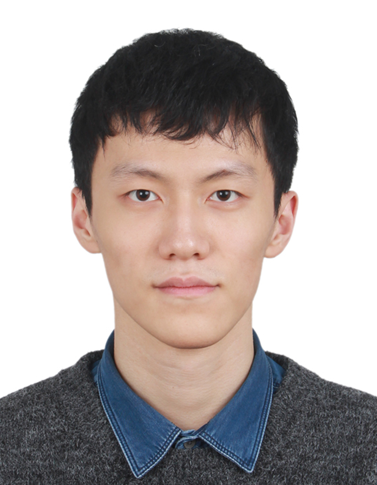

Technical University of Munich
PhD candidate in Computer Engineering
Advisor: Prof. Ulf Schlichtmann
PhD Candidate · Technical University of Munich
I am a PhD candidate in the TUM EDA Lab. I build LLM agents for RTL design and verification, with a focus on Verilog generation, system-level testbenches, and hardware acceleration.

Ranks Verilog candidates by clustering their simulation outputs. Improved functional correctness (pass@1) by 10.5% on average across models on VerilogEval-Human.
Filters candidates, ranks them by simulation, and uses focused reasoning to resolve inconsistent behavior. Improved pass@1 across multiple reasoning models on VerilogEval-Human.
Repairs imperfect design specifications using text analysis and simulation. The paper reports Verilog design pass-rate gains of 12.7% on single-module tasks and 13.7% on multi-module tasks.
I work with Prof. Ulf Schlichtmann at the Technical University of Munich. My research uses large language models to make RTL code generation and system-level verification more reliable.
Previously, I worked with Prof. Yiyu Shi at the University of Notre Dame on neural architecture search, FPGA deployment, and contrastive learning. I also worked on AI chip deployment at Cambricon and CGRA memory systems at Tsinghua University.
PhD candidate in Computer Engineering
Advisor: Prof. Ulf Schlichtmann
M.S. in Computer Science and Engineering
GPA 3.90/4.0 · Advisor: Prof. Yiyu Shi
B.Eng. in Electronic Information Engineering
GPA 3.70/4.0 (average grade: 88.6/100) · Eligible for graduate admission without the national entrance exam
Research Assistant · PhD Candidate
Visiting Student
Research Assistant · Prof. Yiyu Shi
Software Intern
Undergraduate Intern · Assoc. Prof. Zhijie Ding
Research Assistant · Prof. Shouyi Yin
Python · C · C++ · MATLAB · Verilog · Vitis HLS · Vivado · LLM agent development
CET-4 649 (Speaking: A)· CET-6 609 (Speaking: A)· TOEFL 110
Former class representative and choir tenor section leader. Piano performance and musical arrangement.
I welcome conversations about LLM agents, Verilog generation, hardware verification, and EDA automation.